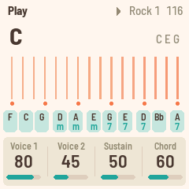
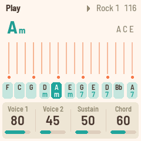
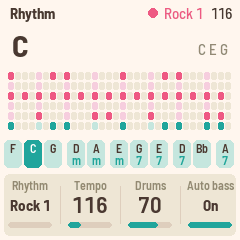

FoMni-1
A chord harp for the M-VAVE FM-1, inspired by the Suzuki Omnichord. Pick a chord on the black keys, run a finger across the white keys, and it rings out. Behind it are an organ-like chord, a bass, and the OM-84's ten rhythms, which can play the bass and chord in time.



Version 0.3. It installs and
uninstalls the way Felucca and X0X do, and the installer can put M-VAVE's own firmware back. Installing is at your own risk.
Playing
| White keys | The strum plate. Each key plucks a string of the chord: root, third and fifth, folded into an F#–F window, five groups up and a root on top, as on the Omnichord. |
| Black keys | The chord buttons: F C G, Dm Am, Em G7 E7, D7 Bb, A7. Hold ENV for the minor, LFO for the 7th, both for the m7. Change any of them on the Chords page (SEL). |
| PLAY · REC | The rhythm, on and off. REC is sync start: the rhythm waits for your first chord. |
| ARP | Chord hold: the chord keeps going after you let go. |
| OCT− · OCT+ | Move the strum plate an octave. |
| SELECT | Tempo. |
| ALGORITHM | Rhythm. |
| PRESETS | Transpose (−6 to +6). |
| KNOB 1–4 | The four values on the screen (see the pages below). |
| SAVE | Saves. FoMni-1 also saves by itself a few seconds after a change, once it's quiet. |
The pages
Each page puts four values on KNOB 1–4. EDIT steps through the pages.
- HOME: Play. Voice 1, Voice 2, Sustain, Chord level.
- SEQ: Rhythm. Rhythm, Tempo, Drums level, Auto bass (on: the bass and chord play in time with the rhythm).
- FX: Sound. Reverb (the strings' send), Space (the plate's size), Width, Chord rev (the chord and bass's send). The drums stay dry.
- SEL: Chords. Change the chord on any black key: press the key, then turn Root (KNOB 1) and Type (KNOB 2). KNOB 3 and 4 are Transpose and Octave.
- GLO: Setup. Tune, MIDI out, Key lights.
MIDI
MIDI comes in over USB and the TRS jack (the FM-1's jack is an input), and goes out over USB.
- In, channel 1. Notes pluck the nearest string.
- In, channel 2. Play a chord on a keyboard and it becomes the chord, as if you'd pressed a black key.
- In, clock. The rhythm follows MIDI clock and start / stop; the screen shows EXT for the tempo.
- Out (on by default, Setup page). The strings on channel 1, the chord on 2, the bass on 3, the drums on 10, and clock with start / stop when the rhythm runs on its own tempo.
To go back to the official firmware, use the installer's "Back to the stock firmware", or M-VAVE's updater, M-UPGRADE, from m-vave.com/download. Omnichord is a trademark of Suzuki; M-VAVE and FM-1 are trademarks of their owners. FoMni-1 is not affiliated with any of them.